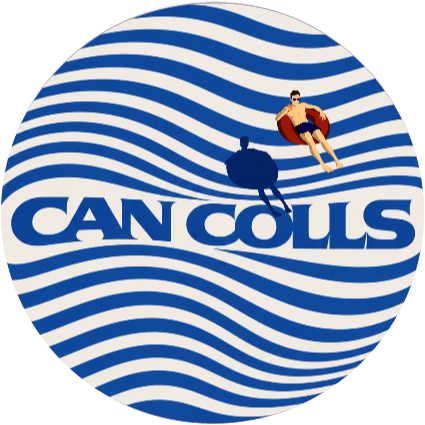

Serveis 2026
Transparent, versàtil
i honest.
Identitat de marca, cartelleria i aplicacions per a petits negocis, sobretot de restauració, que volen entrar al mercat amb decisió. Cada pressupost es fa a mida.

Can Colls DissenyTiquet núm. 001
Pack Essencial
Per a negocis que comencen i necessiten posar la marca en marxa.
- Briefing inicial
- Moodboard i direcció creativa
- Logotip primari i secundari
- Paleta de colors
- Tipografia de marca
- Mockups digitals bàsics
- Arxius finals
Durada2 – 4 setmanes
Pressupost a mida
Can Colls DissenyTiquet núm. 002
Pack Complet
Identitat i aplicacions clau, per a qui vol reinventar-se del tot.
- Tot el Pack Essencial
- 3–4 opcions de logotip
- Manual de marca
- Elements gràfics de suport
- Revisions il·limitades
- Mockups digitals extensos
- 1 aplicació a triar
Durada4 – 6 setmanes
Pressupost a mida
Can Colls DissenyTiquet núm. 003
Cartelleria
Cartells amb la mateixa direcció d'art que la marca.
- Cartells d'esdeveniments
- Cartell exterior del local
- Campanyes i promocions
- Flyers
- Adaptació a xarxes
- Sèries de cartells
Durada1 – 2 setmanes
Pressupost a mida
Can Colls DissenyTiquet núm. 004
Extres a la carta
Aplicacions per completar una marca ja contractada.
- Naming, 5 propostes
- Menú o carta
- Posavasos
- Targetes de presentació
- Retolació
- Plantilles per a xarxes
- Patrons de marca
Durada1 – 2 setmanes
Cada extra
Can Colls DissenyTiquet núm. 005
Pròximament
Webs
Pàgines web per a empreses i professionals, coherents amb la seva marca.
- Web d'una pàgina
- Disseny adaptat a mòbil
- Coherència amb la identitat
- Xarxes per a empreses
DisponibleAviat
Ara mateix en aprenentatge